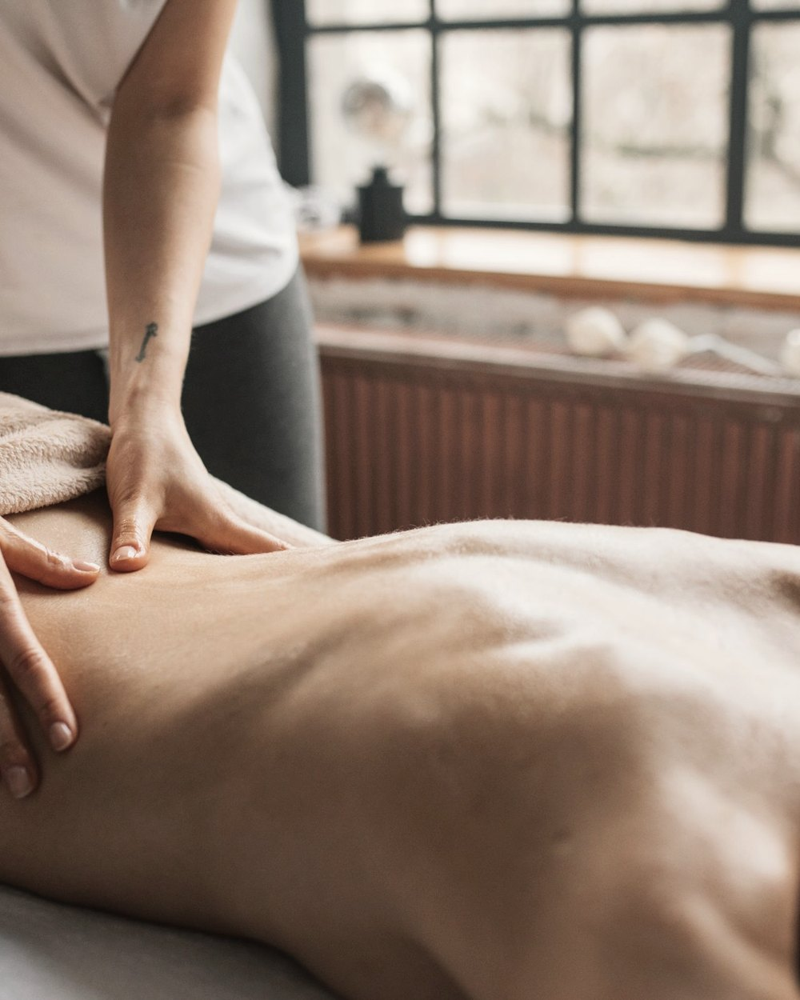
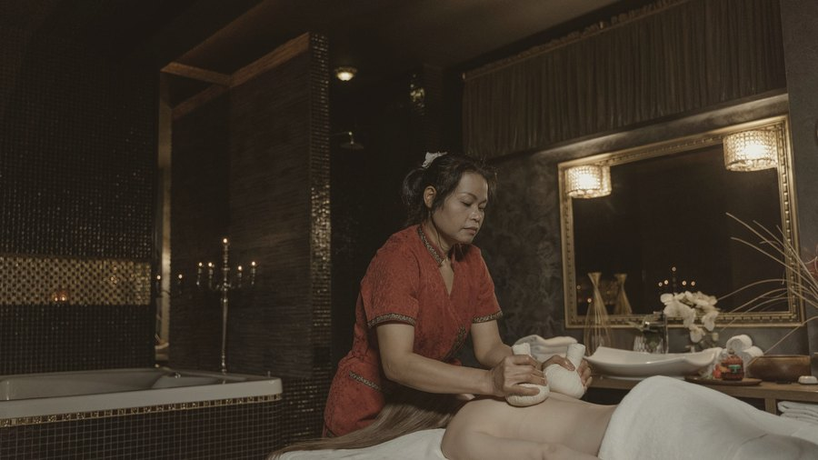
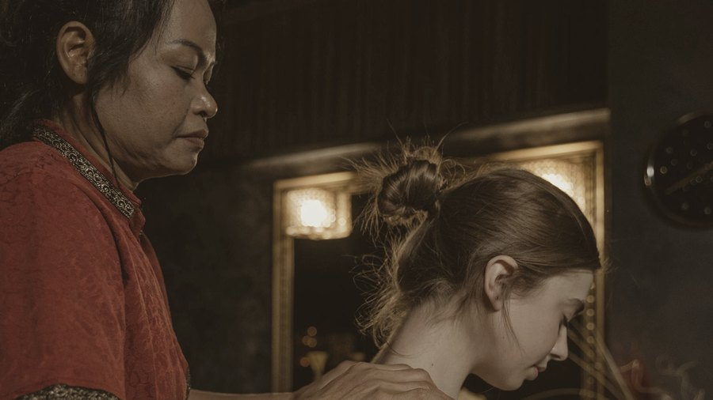
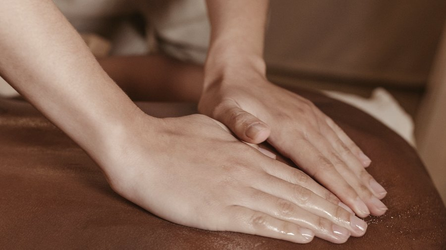
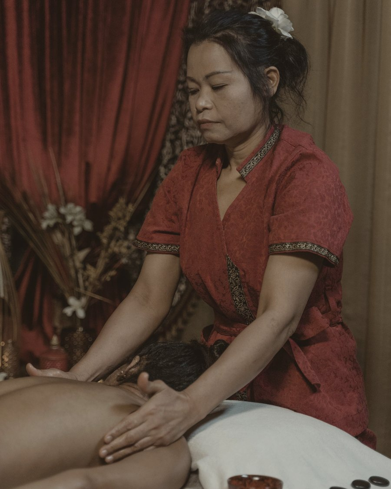

São José Operário · Manaus — AM
Viviane Castro · Massoterapeuta
Não é um cardápio genérico de spa. São três técnicas com ferramentas diferentes — e a escolha entre elas muda o que a sua musculatura recebe.

As três técnicas da casa

Instrumento I
As varas de bambu deslizam e alcançam a musculatura profunda com pressão constante — mais firme do que a mão consegue sustentar por muito tempo. Indicada para quem carrega tensão nas costas e nas pernas.

Instrumento II
A vela de massagem derrete em óleo morno, aplicado direto na pele. O calor prepara o músculo e o toque fica mais lento. É a sessão mais relaxante das três.

Instrumento III
As pedras são posicionadas em pontos específicos e deslizadas ao longo da coluna. O calor abre a musculatura antes da manobra — quem tem nó no trapézio sente a diferença.
Um detalhe raro
A maioria dos espaços de massagem fecha às 18h — exatamente quando quem trabalha o dia inteiro fica livre. Aqui não.
De segunda a sábado a agenda vai das 8h às 22h. E domingo também abre, das 9h às 21h30. Sessão depois do expediente, ou no fim do domingo, antes da semana começar de novo.
Para quem
Atendimento adaptado, com posicionamento e pressão pensados para a gravidez.
Sessão mais lenta, com atenção à mobilidade e ao conforto na maca.
Pacote para o dia antes do casamento — pode ser feito acompanhada, para noiva e madrinhas.

Quem atende
Massoterapeuta, especialista em massagem relaxante. É ela quem atende — e é ela quem escreve nas redes da casa, em primeira pessoa, sobre o espaço e sobre o bairro.
São 100 avaliações no Google, todas mantendo a nota 5,0. Cem pessoas e nenhuma abaixo da média: isso não acontece por acaso num espaço de massagem.
A drenagem linfática também está no cardápio, para quem procura por esse serviço.
Contato
Mande mensagem dizendo onde está a sua tensão e que horário te serve. A gente indica entre bambu, vela e pedra — e reserva a maca.
Como chegar